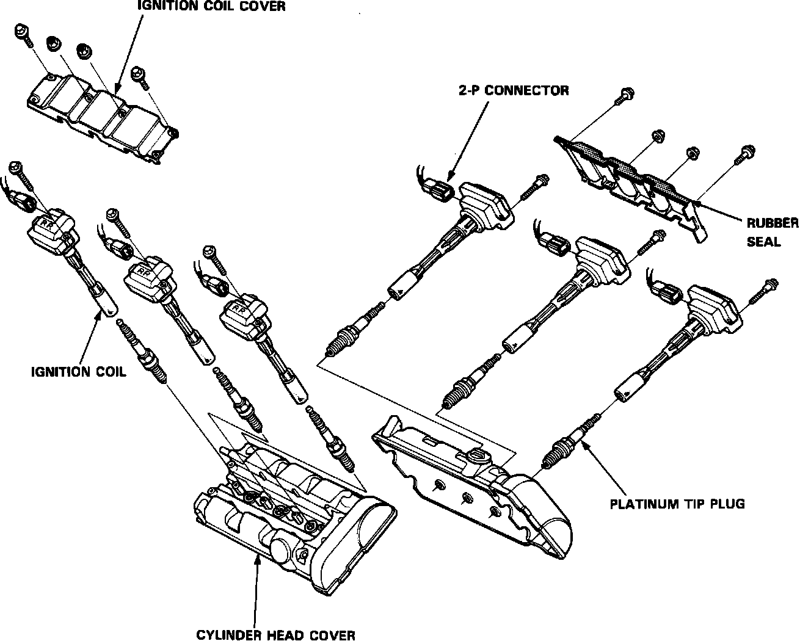

Spark Plug: Service and Repair
Ignition Coil/plug:

CAUTION: Ignition coils and plugs can become very hot in use, do not touch them: handle the ignition coils and plugs carefully.
1. Remove the ignition coil covers.
2. Disconnect the 2-P connectors from the ignition coils.
3. Remove the ignition coils.
4. Remove the plugs.
5. Gap new plugs.
Gap to: 0.043 in. (1.1 mm)
6. Reinstall plugs.
Torque to: 13 ft. lbs
7. Install the ignition coils.
NOTE: Different ignition coils and ignition coil covers are used for the front side and rear side. Be sure to use correct ones when mounting them.
8. Connect the 2-P connectors from the ignition coils.
9. Reinstall the ignition coil covers.